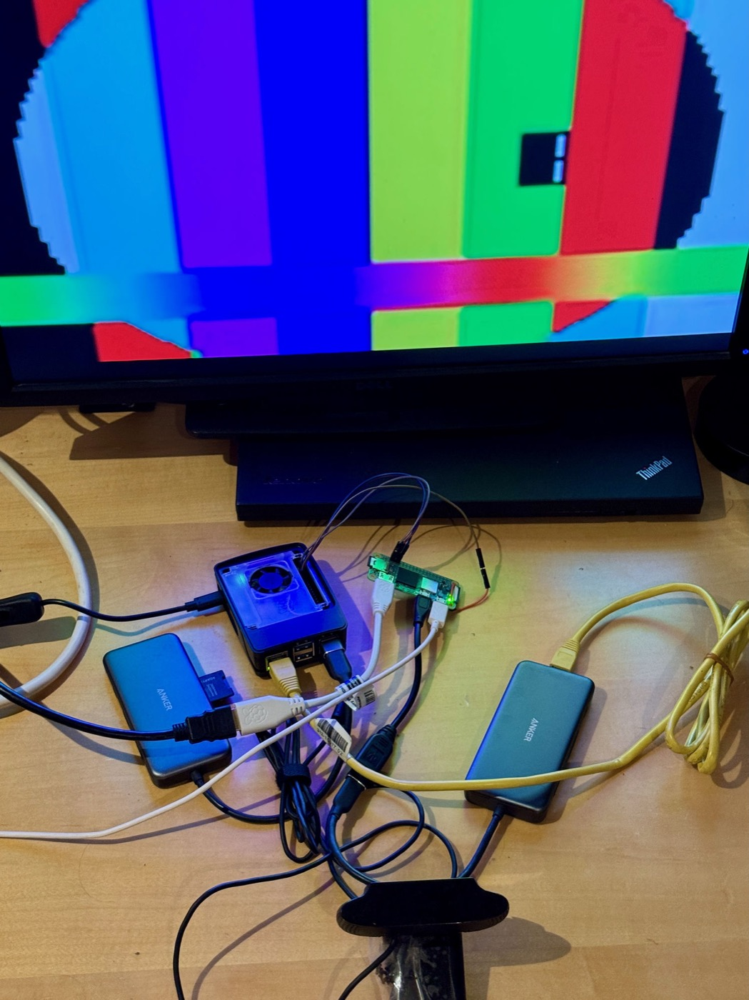

Most of this week is one repository, and most of that is one document: a runbook kept while getting last week’s video decoder onto a bare-metal Pi Zero 2 W, with the display driven straight from the ARM. It records a board running at half its clock because nobody had ever raised it, a display fault that took sixteen probes to find and did not exist, and a “150× slower than SBCL” that was file I/O in the timer. Then Linux is netbooted onto the same board so that SBCL and libvpx can be measured on identical silicon — and the gap turns out to be instruction count, all of it. Two days later the instruction count is below SBCL’s. And, unannounced and unlinked, a Modus that runs in a browser tab.
A Raspberry Pi’s display belongs to its GPU firmware. The ARM asks the VideoCore for a framebuffer over a mailbox and draws into what it is given, and that is how every hobby OS on the platform puts anything on screen, including Modus until this week. What lands on Wednesday is the other way round: the ARM programs the Hardware Video Scaler itself — the display list, the pixel valve, the HDMI PHY — and the firmware is out of the path.
The commit subjects are a fair record of what that took. VERDICT — ARM-side FRAMEBUFFER_RELEASE cannot render. BREAKTHROUGH — 128-bit STP writes a full HVS register. CPRMAN is invisible to the ARM; NOTIFY_DISPLAY_DONE is what kills scanout. full HVS+PV+HDMI bring-up from the ARM; last blocker = PHY RNG_PWRDN. And then, the same afternoon: PIXELS ON SCREEN.
By evening it is a real display path. A hardware double buffer whose flip retargets the live plane pointer in one or two microseconds; non-cacheable back buffers that fill a full screen in 9.75 ms, which is the DRAM ceiling; a hardware-scaled YUV plane, so a 640×360 decode is scaled to the panel by the HVS rather than by anything Lisp does; and 60 Hz measured — 600 frames in 10.005 seconds, 0.84 ms of CPU per frame. A stubborn 4:1 write narrowing turns out to be the Device memory mapping, which is the sort of thing you only learn by owning the page tables.
That night reel’s VP8 decoder draws its first frames onto that plane, from a native core built under QEMU and netbooted to the board. Seven frames a second.

Thursday is fifty-nine commits, nearly all to one file, and it is the most legible day in this archive because the file is a runbook: every measurement, every hypothesis, every retraction, in the order they happened. Three of its findings are worth the whole week.
The board was running at 600 MHz. The Pi firmware boots the ARM at its idle
clock and expects the operating system to raise it. There was no operating system, so nobody
had — through every measurement of the previous month. One mailbox call takes the decoder
from 208.6 to 125.6 ms a frame, and the image now raises the clock at boot and prints
ARMCLK= as a required marker so that it can never silently not happen again.
The display fault that was not. Sixteen consecutive runbook entries chase garbage on screen: the display list is read back and matches what was written; literals are checked; the non-cacheable window is exonerated; the copy is bisected against a known-good session; no single-variable theory left. Then:
RESOLVED — no display fault; cam.ivf frame 0 really is a noise strip over pink. The two cores carried different clips. Rule: render the reference frame on the host before judging the board.
modus — e08ae570The known-good core had been decoding a colour-bar test clip; the new one was decoding a camera clip whose first frame is, in fact, noise over pink. Every probe had been correct. The rule that came out of it is the kind that only gets written after the afternoon that earned it.
The compiler was innocent of one regression. Enabling the display path made the
decoder 3.5 times slower — 76.5 to 273 ms a frame — and the cause was that
rh-init was remapping memory as non-cacheable for the display buffers and the
blocks it remapped held reel’s JIT-compiled code. The decoder had been running from
uncached memory. Two-megabyte alignment of the display buffers, and the number goes back.
Between those, the work that was actually planned: a NEON transpose for the loop filter
takes it from 18 to 8 ms a frame; let* learns to stamp each binding’s
declared type as it is made, so later initialisers stop tag-testing earlier variables; a
residual-skip path lands. The day ends at 49.2 ms a frame, 20 frames a second, on the
A53 at one gigahertz.
The runbook had been quoting Pi 5 decode times from a harness that reported ~9,500 ms for 48 frames, and had drawn from them the remark that Modus was around 150 times slower than SBCL. Late on Thursday, in bold:
CORRECTION: every hosted-A76 “DECODE-MS” figure quoted in this file is NOT
decode time. internal-time-units-per-second is 1000 on the hosted CLI and the
harness spent 6.6 s in a read-byte loop loading the 100 KB clip plus
~1 s writing I420, around ~0.3 s of decoding. … the “~150×
slower than SBCL” remark was wrong: SBCL decodes vp8-std at 1.29 ms/frame, Modus
on the A76 at 6.4 — about 5×.
Which also meant that several “no change” verdicts on earlier optimisations had been noise, and the runbook says so, and names the driver to use instead. A number that was thirty times too pessimistic, found and struck through on the same page it was written.
Five times slower than SBCL, on different chips, with different clocks, is not a figure
anyone can act on. So Linux is netbooted onto the Zero over the same U-Boot rig —
Raspberry Pi OS kernel, a busybox initramfs with SBCL in it, a shell over nc
— and the same clip is decoded three ways on the same Cortex-A53 at the same
gigahertz:
libvpx 1.15 SBCL 2.5.2 Modus ms / frame 1.39 18.4 52 (hosted) / 49.2 (bare metal) IPC 0.82 0.89 0.71 instructions / frame ~1.1 M ~16 M ~37 M L1I refills / k-inst 1.4 2.0 38 cycles stalled on I-cache 2.3% 1.5% 30% L1D miss / access 1.48% 0.44% 0.25%
Three things fall out of that table, and the runbook draws each one.
First, bare metal costs nothing. Modus hosted on Linux and Modus on the bare board are 52 and 49 ms a frame; the operating system was never the overhead. Second, the gap to SBCL is 2.7× on identical silicon — “the honest compiler-gap figure,” in the runbook’s words, and the number this project should have been quoting all along. Third, and this is the one that sets the next two days:
The whole ladder is INSTRUCTION COUNT at near-identical IPC — libvpx ~1.1 M per frame, SBCL 16 M (14×), Modus 37 M (33×). Modus executes ~2.3× SBCL’s instructions AND loses 30% of its cycles to instruction-cache misses — the JIT’s code does not fit the 32 KB L1I; SBCL’s does. Data-side behaviour is fine for both. So the codegen work has two payoffs that compound: fewer instructions and smaller code.
modus — BOARD-RUNBOOK.md §6fThe memory system is not the problem. The branch predictor is not the problem. The in-order core is not the problem. Modus emits too many instructions and they do not fit in the cache, and that is the whole of it. Getting the counters that say so was its own sub-plot — the A53’s performance monitors would count nothing on the bare board, and the runbook records a hypothesis about which core was being read, a claim that Modus’s own system-register reads were wrong, and then a retraction of that claim as a hex slip, before the Linux detour made the question moot.
Friday attacks the instruction count directly, and the runbook keeps a ladder:
37.33 M Thursday's figure
29.34 M register-resident locals: hot variables live in x4–x8, not frame slots
27.96 M x18 holds the convention block; SET-NARGS/GET-NARGS go 4→2 instructions
24.19 M reel: hygiene
20.28 M reel: coefficient blocks clear themselves on consume
17.00 M reel: NEON intra prediction
16.14 M reel: typed locals in decode-macroblocks
15.81 M register promotion ranks over the whole function — a nested LET's
hot variables win the registers from an outer loop's flags
Thursday’s table put SBCL at about 16 million instructions a frame. By Friday night, by its own counting, Modus is under that. On the bare-metal Zero the decoder goes from 49.2 to 36.7 ms a frame — 20 to 27 frames a second — with the MD5 of all 48 reference frames unchanged at every step, and every probe checked against SBCL running the same source.
Two of the steps found miscompiles, and both are the kind that only a decoder with a
checksum catches. The predicate deciding whether a setq may write straight into a
register was written with return-from inside labels — which
the self-hosted compiler does not honour, so the first version accepted every form, and
(setq acc (+ acc (f x))) evaluated the call into acc’s
register before reading it. Rewritten without it, the predicate then let through unary minus:
(setf v (- v)) compiles as (- 0 v), and the constant went into
v’s register first, so every negative coefficient in the decoder became
zero. Both were invisible until a narrower slot type let the surrounding function promote.
A third bug was older and lower. Moving the convention block’s base into
x18 meant auditing every use of that register as scratch, and the serial
port’s poll loop had one: the first UART write clobbered the base, and the Pi image
faulted before it could print its banner. ESR data abort, x18=0x60.
And one lesson that runs against the grain of everything a C programmer would try.
libvpx keeps its bool decoder in registers across all twenty-five blocks of a macroblock by
decoding them in one function. Expanding reel the same way, as a macro inside
decode-residue, cost fourteen per cent — five local registers cannot
hold the hot variables of a function four times larger, so the promotion that had made the
small function fast fell back to frame slots. “Small hot functions with their own
register budget beat one large one until the register file grows.” Reverted, and
recorded, under the heading “still shaving when the C algorithm shows a ton of
meat.”
This dispatch has never counted the repository it lives in, on the grounds that a dispatch
does not report on itself. That rule was written for crier’s own files, and last week it
hid something that is not crier at all. On 11 September a directory called
repl/ arrived here, unlinked from anything, and this week it became a thing:
a Modus REPL that runs in the browser. The
whole Common Lisp system compiled to MVM bytecode, executed by a JavaScript interpreter in a
Web Worker. Static files. No server. It is the web-interp branch of modus,
deployed.
Then, on Wednesday, eighteen commits in one day give it something to show. A samples browser:
read the source, then run it. A DOM calculator and a WebGL game. Tab completion and a live
symbol explorer. Quicklisp, working offline from bundled tarballs, so
ql:quickload works in a tab with no network. A mobile layout with touch
controls. And a rotating cube through a cl-opengl immediate-mode bridge to WebGL,
whose four commits are a small performance story of their own:
~7.5x display lists, and cheaper float formatting
44 → 15 ms/frame double-float matrices
a native float bridge: raw IEEE-754 doubles across the boundary
→ ~4.5 ms/frame one matrix multiply per frame
Then Boids, with instanced draws. The introspection RPC is stripped back to a verified kernel module along the way, and a Fixpoint sample — a minimal SHA-verified loader — is added and then removed the same day.
It is worth placing next to the rest of the issue. The same compiler that is being taught to fit a 32 KB instruction cache on a Cortex-A53 is also, this week, running under a JavaScript interpreter in Safari, drawing a cube. Nine architectures was № 2; the tenth target is a browser.
shuttle grows the Temporal calendars — as a bijection between day numbers
and fields, reachable from JavaScript through one gate, including the Hebrew calendar,
“where the months move” — and the mapped arguments
object, with the note that an arrow function has none of its own. test262 is sharded across
cores. The bundler learns two more output shapes: a module, and --global-name.
operandi, the agent loop, lets its host get a word into a turn already running, stops on stuck rather than on long and says so in the history, compacts with a margin rather than at the line, and on exit prints the command that resumes the session. operandi-gui replaces five minutes of “…thinking…” with what the turn is doing.
modus, apart from the runbook: --compile-aarch64 output is now
host-independent — merged on Friday — which extends to the ARM target the property
the three-host fixpoint established for x64 in
№ 27: whichever Lisp built Modus, what Modus compiles
is byte-identical. kiln: a thread that dies no longer takes the desktop with it, and the lock file is
refreshed from the organisation’s live refs rather than from whatever was cloned. Which is
a small commit and the exact discipline this dispatch had to learn for itself three weeks
running. weft gives scripts screen, window.name and
element.dataset, and an uncaught error now says which script it came from.
loom lays a page out at the viewport the page asks for, and asks the network as a
phone.
Last week three gates went red because VP8 moved into reel and the workflows that check out
sibling repositories were not told. Nobody told them this week either, and the break has
spread the way a missing dependency does: loom and weft both depend on webp-pure, both pushed
on Thursday, and both now fail on Component :REEL not found without having
changed anything relevant. Five of the organisation’s seven red badges are that one
line. The sixth is operandi’s reverted gate, three weeks stale; the seventh is
kiln’s fast test tripping a reader error — Package does not exist —
while its two heavier workflows pass.
48 repositories, 34 green, 7 failing, 7 with no CI. reel and cassette, which between them are most of what the last two issues were about, are still among the seven with nothing watching them.